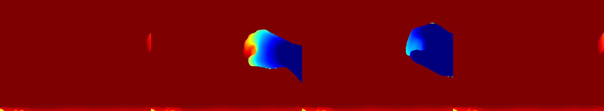
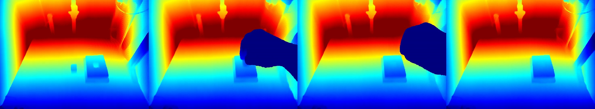
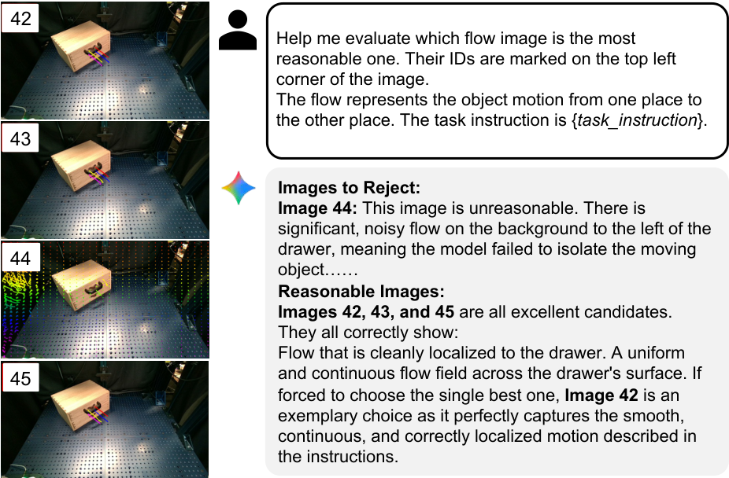
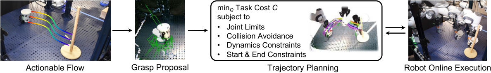
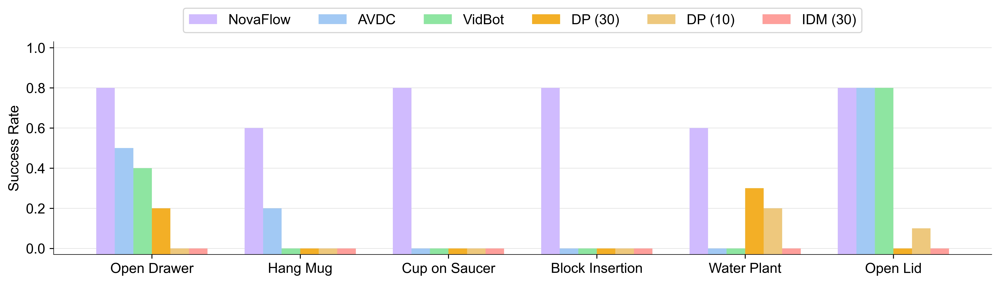
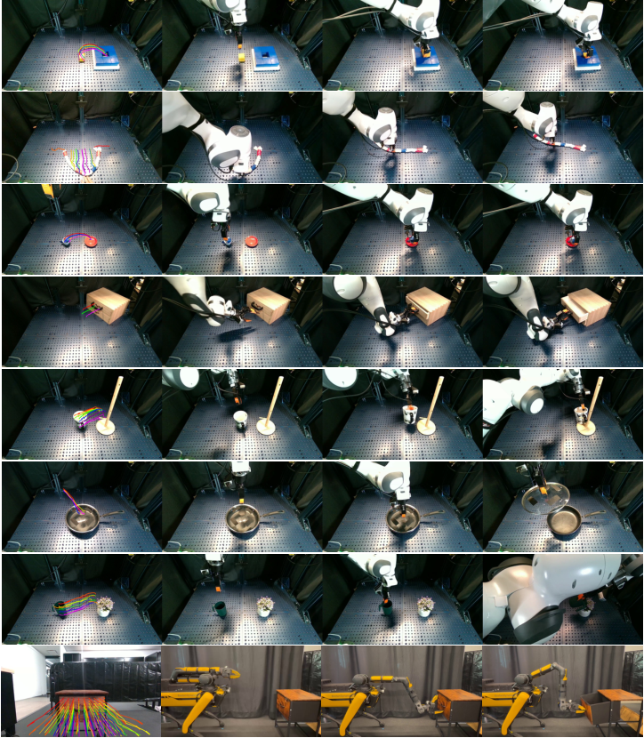

NovaFlow: Zero-Shot Manipulation via Actionable Flow from Generated Videos
This is a robotic manipulation paper that turns "generative video" into "executable 3D object flow". Its core proposition is not to train a new VLA strategy, but to distill common sense actions in the video model into object movements, and then hand them over to traditional geometry, grasping and trajectory optimization modules for execution.
1. Quick overview of the paper
| What should the paper solve? | Let the robot complete real-world operation tasks, including rigid bodies, joint objects and deformable objects, based on language instructions and initial images without task demonstrations, no target robot-specific training data, and no predefined skill library. |
|---|---|
| The author's approach | First, a large-scale video generation model is used to generate a video of "how the task should occur from a human perspective", and then the video is distilled into actionable 3D object flow through depth estimation, 3D point tracking, object segmentation and VLM rejection sampling; then, grab proposals, Kabsch pose estimation, model planning and trajectory optimization are used to turn the object flow into robot actions. |
| most important results | NovaFlow overall outperforms the zero-sample baseline AVDC and VidBot on the real Franka desktop task, as well as Diffusion Policy and IDM trained with 10 or 30 demonstrations; in block insertion ablation, the target image increases Wan2.1's video success from 15% to 46% and task success from 40% to 80%. |
| Things to note when reading | The highlight of this paper is "representation and system combination", not end-to-end policy learning. It needs to be seen clearly: generating videos does not directly control the robot. What is truly executable is the object flow after 3D calibration, object filtering and VLM selection; the final failure mainly falls on grabbing and real execution, not entirely due to video generation. |

2. Problem setting and motivation
The paper targets a very realistic breakpoint: large models can already generate videos of "roughly how to do this task", but robot strategies usually require a large amount of ontology-related data. The bottleneck of the VLA model is robot-specific data, while modular approaches often require predefined primitives, handwriting skills, or real demonstrations.
The author breaks the question into two levels. The first layer is "understanding how the objects in the task should move from language and images", which is handed over to the video generation model and the visual basic model. The second layer is "how the robot realizes the movement of this object", which is left to geometric control, grasping, model planning and trajectory optimization. The key to doing this is to find an intermediate representation: actionable 3D object flow.
3. Related job positioning
3.1 Video to operation
Existing video-based manipulation typically either requires robot data and inverse dynamics, or relies on learning a policy or affordance model from video. The difference of NovaFlow is that it does not train a new cross-ontology strategy, but converts the motion trajectories generated by the ready-made video model into 3D object flow, and then executes it through the downstream control module.
3.2 Object center representation and flow
6D pose or object-centric methods are natural for rigid bodies, but are not sufficient for deformable objects such as ropes and cloth. Flow representation is more general, can describe the movement of local points, and is also compatible with rigid bodies, joint objects, and deformable objects. The bet of the paper is: 3D object flow is close enough to "task intent" and close enough to "robot executable".
3.3 Relationship to VLA/Modular Planning
The difference between NovaFlow and VLA is not whether a large model is used, but where the learning signal comes from. VLA often requires robot motion data; NovaFlow borrows common sense motion from the video model and then uses traditional robot modules to supplement execution. It is similar to the modular route of LLM/VLM+planner, but replaces the "skill library" with task-specific 3D flows extracted from videos.
4. Intensive reading of methods
4.1 Overall pipeline
NovaFlow has two core modules: flow generator and flow executor. The former is responsible for generating 3D object flow from language, initial images and optional target images; the latter is responsible for turning object flow into real robot actions.

4.2 Video generation: turning task language into candidate motion
Input consists of initial RGB image I, language command l, and optional target images in precision placement tasks I_g. If there is no target image, the system uses image-to-video; if there is a target image, it uses first-last-frame-to-video so that the generated video satisfies both the starting point and the end point.
In terms of implementation, the author uses Wan2.1 as an open source video model and also tested Google Veo. Wan2.1 produces 41 frames, 1280x720, 16 FPS; Veo produces 8 seconds of 24 FPS video downsampled to 41 frames. appendix also stated that Wan2.1 officially recommends Chinese prompts, and the author also observed that the quality of Chinese prompts is better.
4.3 3D lifting: from video pixels to 3D object flow
The generated video itself only has pixel motion. To make it executable, NovaFlow first uses MegaSaM/MoGe to estimate the depth of each frame, and then uses the initial true depth map for scaling. The specific method is to compare the median depth of the estimated depth of the first frame with the initial real depth, obtain the scale factor and then multiply it to all estimated depths.
The system then uses TAPIP3D for 3D point tracking. The parameters given by appendix are: use in the first frame 32 x 32 Uniform grid sampling query points, tracker iteration set to 6. The emphasis here is on point tracking in 3D XYZ space, rather than just tracking pixels in 2D UVD space.


4.4 Object grounding: Only retain the flow of the target object
Dense 3D tracking covers the entire image, but the robot only needs the motion of the target object. The author uses the Grounded-SAM2 pipeline, which is Grounding DINO plus SAM2. The system uses the target object name as a query, extracts the object mask in the video, and then uses the mask to filter the 3D tracks, retaining only points that are always visible and belong to the target object. The thresholds given by appendix are bbox threshold 0.25, text threshold 0.3, and the box with the highest Grounding DINO score is selected as the SAM2 prompt.
4.5 VLM rejection sampling: dealing with generative model illusions
Video generation models may produce videos that are unphysical, discontinuous, object misaligned, or task-misaligned. NovaFlow does not directly trust a single generation result, but generates multiple candidate 3D object flows at once, projects the flow back to the first frame to form a numbered 2D flow image, and then gives it to Gemini 2.5 Pro to select the most reasonable candidate.
VLM judgment criteria include motion continuity, natural motion, correct target object recognition, and compliance with task requirements. The paper specifically points out that flow image is more suitable for VLM selection than the original spliced video because it explicitly displays "which object moves how".

4.6 Flow executor: rigid bodies, joint objects and deformable objects

For rigid bodies and joint objects, NovaFlow first uses GraspGen to generate grasp proposals from the target object point cloud. After the object flow is given, the system uses the Kabsch algorithm to estimate the rigid body transformation at each time step based on the front and back positions of the key points. (R_t, t_t). Under the assumption of "grasp and no slip", changes in the object's pose can be converted into changes in the end-effector's pose.
For deformable objects, the rigid body pose no longer holds. The paper uses particle dynamics models such as PhysTwin and uses 3D object flow as the tracking objective for model-based planning. The value of flow here is to give dense, task-related target motion, rather than simplifying the rope into a rigid body pose.
4.7 Trajectory optimization
appendix gives trace optimization of the execution phase. The system is looking for a list of joint configurations Q = {q_0, ..., q_{T-1}}, the goal is to be smooth and close to the rest pose, and meet the start and end IK, joint limits and collision safety distance. Optimization is initialized by linear interpolation followed by nonlinear least squares solution with Levenberg-Marquardt; implemented using PyRoki and JAX.
In the weight setting, the joint limit penalty is w_l = 100.0, smoothness is w_s = 10.0, collision is w_c = 15.0, rest position is w_r = 0.1. These details show that the paper does not just stop at "video understanding", but seriously adds to the robot execution layer.
5. Experiments and results
5.1 Hardware and tasks
The experiment uses a Franka robotic arm plus a Robotiq-85 gripper for desktop operations, and uses a Spot quadruped mobile robot to demonstrate cross-body movement operations. Only one RealSense D455 depth camera is used for rigid body and joint object tasks; three synchronized cameras are used for deformable objects due to the requirements of PhysTwin. The author also explains that a single-view setting is theoretically feasible.
Tasks include six categories: hanging a cup, inserting a yellow cube, placing the cup on a saucer, watering a plant, opening a drawer, and straightening a rope. There were 10 trials per task, with object placement randomly changing each time.

5.2 Baselines
| Category | method | Contrastive meaning |
|---|---|---|
| Demo-free / zero-shot | AVDC | Put the 2D optical flow in the generated video directly into action and examine what is lost without a 3D actionable representation. |
| Demo-free / zero-shot | VidBot | Learn affordance flow from large-scale human interaction data and examine the difference between learned affordance flow and generated video flow. |
| Data-dependent | Diffusion Policy, 10 / 30 demos | An imitation learning baseline trained with a small number of demonstrations per task; this is a more conducive single-task setting for baselines. |
| Data-dependent | IDM from UniPi, 30 demos | Train inverse dynamics, convert the robot task video generated by Wan2.1 into actions, and test whether the "video to action" route is resistant to domain shift. |
5.3 Main results
The paper reports that NovaFlow achieves the highest success rate among zero-shot methods on all tasks, and overall outperforms data-dependent baselines trained with 10 or 30 demonstrations. AVDC is competitive in affordance tasks, but lacks 3D awareness and long-term consistency, and is weak in precise placement and rotation tasks. VidBot is good for affordance-centric tasks such as opening drawers, but is not stable enough for object-object relations and precise relative poses. The problem of DP is poor generalization under a small number of demonstrations; the problem of IDM is that it is trained on real robot videos, but it has to interpret the generated videos, and there is an obvious domain shift.

5.4 Goal image ablation
Block insertion is a millimeter-level accuracy task. The author compared whether to give a target image, and the difference between Wan2.1 and Veo. There are two indicators: Video Success indicates whether effective actionable flow can be extracted from the generated video; Task Success indicates whether the actual execution of the robot is successful after VLM selects the flow from multiple candidates.
| Conditions | Video Success | Task Success | Time (s) |
|---|---|---|---|
| w/ Goal Image (Wan2.1) | 46% | 80% | 612 |
| w/o Goal Image (Wan2.1) | 15% | 40% | 612 |
| w/o Goal Image (Veo) | 75% | 80% | 20 |
This table has two pieces of information. First, for open source Wan2.1, target images significantly improve precision task controllability. Second, closed-source Veo can achieve high video success without the need for target images, but the cost and controllability are determined by external services.
5.5 Running time
| module | MegaSaM | TAPIP3D | SAM2 | Total (Veo) | Total (Wan) |
|---|---|---|---|---|---|
| Time (s) | 100 | 5 | 8 | 133 | 725 |
On a single NVIDIA H100, the full flow generation of the Veo version takes about 2 minutes. The main time consuming comes from video generation and 3D lifting. Wan2.1 is much slower, but it is open source, controllable, and has no closed source API cost.
5.6 Failure Analysis
The author divides failures into four categories: video failure, tracking failure, grasp failure, and execution failure. Video failure comes from the fact that the generated video is not physical, inconsistent with 3D or violates the task; tracking failure is mostly caused by few textures, heavy occlusion, and inconsistent video models; grasp failure is approaching direction, missed grasp, slippage, etc.; execution failure includes collision, joint limitation, or trajectory tracking failure.

6. reproducibility and implementation details
video model
Wan2.1 uses I2V and FLF2V modes, 41 frames, 1280x720, 16 FPS; the sampler is UniPC, 40 steps, noise shift 5.0, guidance scale 5.0. Veo uses veo-3.0-generate-001, 8 seconds, 1280x720, 24 FPS, downsampled to 41 frames.
Prompt project
Wan2.1 uses the official prompt extension template and uses Gemini 2.5 Pro to extend it into Chinese prompt. Veo uses Vertex AI's native prompt enhancement.
Depth and Tracking
MegaSaM/MoGe estimates depth, and the initial real depth map is median scaling. TAPIP3D tracks in XYZ space, the query grid is 32 x 32, iteration is 6.
object segmentation
Grounding DINO plus SAM2. bbox threshold 0.25, text threshold 0.3; take the highest score bounding box as the input prompt of SAM2.
execution module
Rigid body tasks use GraspGen, Kabsch pose estimation and PyRoki / JAX trajectory optimization; deformable tasks use PhysTwin, using object flow as the tracking objective.
Calculate budget
Eight candidate flows can be generated in parallel at a time and then selected by VLM. appendix mentioned that 8 candidates can be generated in parallel using 8 H100 sheets.

7. Analysis, Limitations and Boundaries
7.1 The most valuable part of this paper
The most valuable part is that a very clear intermediate representation is proposed and verified: actionable 3D object flow. It fills in the missing interface between the world knowledge of the video generation model and the robot execution module. This interface is closer to geometric execution than language planning, less dependent on specific robots than low-level actions, and can handle occlusion, depth and relative pose better than 2D flow.
Another value is that the system combination is pragmatic. The author does not claim that the video model can directly control the robot, but admits that the video model will have hallucinations, depth will have scale problems, tracking will drift, and grasping will fail, and then use depth calibration, object grounding, VLM rejection sampling and trajectory optimization to narrow the problem layer by layer.
7.2 Why the results hold up
The results are convincing for four reasons. First, the experiments are on real robots rather than pure simulations, and cover rigid bodies, joint objects, deformable objects, and movement operations. Second, the baseline includes zero-shot methods and few-sample data-dependent methods, which can answer the question "Is it just not comparable to the training strategy?" Third, the paper puts key designs into ablation, such as the impact of target images on block insertion. Fourth, failure analysis does not push all errors to downstream, but clearly separates the four types of bottlenecks: video, tracking, Grasp, and execution.
However, it should also be noted that the main experiment has 10 tasks per task and is not large in scale; many modules use powerful off-the-shelf basic models and H100-level computing resources. The results are tenable mainly at the level of "proving that the route is feasible and superior to these comparisons", rather than proving that it can be deployed in a low-cost, long-term, closed-loop manner.
7.3 Limitations
- Open loop execution: The system mainly executes from the flow plan generated once, and lacks online re-planning when encountering slippage, collision, and object state deviation.
- Depends on generated video quality: If the video model cannot generate physically reasonable and goal-consistent task videos, there will be no source available for the subsequent 3D flow, no matter how sophisticated it is.
- Dependency aware stack: Depth estimation, 3D tracking, and SAM2 grounding may all fail, especially in transparent, reflective, low-texture, and strongly occlusion scenes.
- The crawl hypothesis is strong: Rigid bodies perform a default grasp and do not slip. Once the object rotates in the gripper or the contact dynamics are complex, Kabsch's mapping to the end pose will be distorted.
- Cost and delay: The Veo version is fast but closed source and charged; the Wan2.1 version is open source but slow. Parallel 8-candidate rejection sampling is friendly to laboratory resources, but may not be economical for practical deployment.
7. 4 Boundary conditions
NovaFlow is most suitable for scenarios where the target object can be stably recognized by the visual model, the task can be described by object motion, there is not much difference between the initial scene and the generated video, and the robot has sufficiently reliable grasping and trajectory execution modules. It is not suitable for tasks requiring high-frequency tactile feedback, strong contact dynamics, long-term closed-loop error correction, or implicit state estimation.
8. Preparation for group meeting Q&A
Q1: Why not directly train inverse dynamics without generating videos?
The IDM baseline of the paper is compared in this direction. The problem is that inverse dynamics is trained on real robot demonstrations, but it has to interpret the generated video. The actions of the generated video are not necessarily consistent with the robot's kinematics, and the domain shift is large. NovaFlow chooses to convert the video into a 3D object flow, and then execute it using the robot's own geometric control.
Q2: Why is flow more suitable than 6D pose?
6D pose is good for rigid bodies, but unnatural for deformable objects such as ropes; flow can describe the motion of multiple points, which can be degenerated into rigid body poses through Kabsch and can also be used as a tracking objective for deformable planning.
Q3: Is VLM rejection sampling just picking pictures instead of truly understanding physics?
It's really not a physical validator, but more like an execution-time candidate filter. It can filter out flows that are obviously in the wrong direction, in the wrong direction, and discontinuous, but it cannot guarantee that real contact is possible. Therefore, trajectory optimization, crawling inspection and real execution are still needed later.
Q4: What is the biggest next step for the paper?
Closed loop. The current system demonstrates an open-loop route from generating video to executable flow, but failure analysis has shown that last-mile grasp and execution are the main bottlenecks. Taking the execution feedback and updating the flow, reselecting candidates or online replanning is the most natural next step.
Q5: Do this paper and the VLA route compete or complement each other?
More like complementary. VLA pursues action learning from large-scale robot data; NovaFlow pursues the ability to combine video models and robot modules to achieve zero-sample capabilities. In the future, actionable flows can be used as auxiliary supervision of VLA, planning intermediate states, or as explainable fallback when VLA fails.